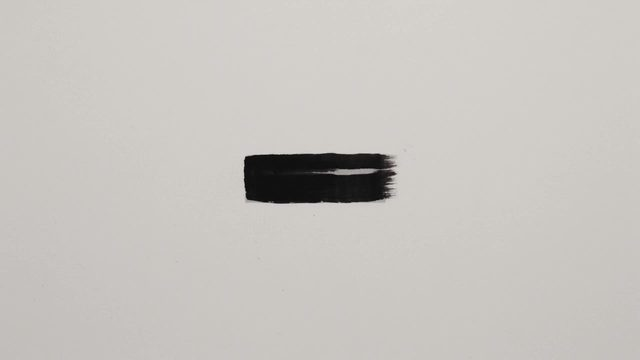
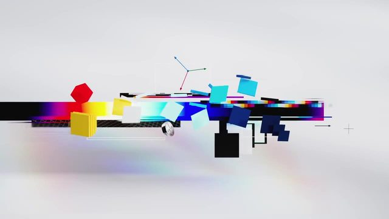

点封面在页面里播放（Vimeo / YouTube / X 需要代理；Vimeo 若没自动开始，再点一下播放键）。觉得好就点「喜欢」，我会据此多找同类，但每天仍保持类型分散。
目录 01 Guess How Far The Sun Is02 The Sphere Intersection Puzzle03 Printing 92 GPU Chips in Just 18 Seconds!04 What If We Cool Down the Sun?05 What's your mood?（Spotify 概念动效）06 Distance07 Felipe Pantone x Etnia Barcelona08 The Continuous Thread09 Bremont & Felix the Cat – Watch your 610 MOTION PLUS DESIGN PARIS 2026 – Trailer－ 看完剔除（13 条）拆 细拆：Cleo Abram 太阳有多远
01 数据可视化 知识讲解
Guess How Far The Sun Is
Cleo Abram · YouTube Shorts 10-27 【看过视频】
38 秒全片已下载
好在哪 太空广角里把地球放下面、月亮放上面，其他行星一个个弹进来叠成竖排，旁边一根荧光绿双向箭头量长度。接着镜头沿竖线往上摇，倍数从 1x 往上数，停在 95x（金星）、192x（水星），再一路冲进太阳，太阳原地变成着火的篮球；最后计数跑过 270x、369x，落在「374 TIMES!」。字幕在下方居中，白色全大写粗体，没有底框可借 讲「有多远/多大」时，用 Three.js 把物体排成一列，相机沿着这一列往上摇，箭头跟着变长、计数器跟着涨，到关键物体停 1–1.5 秒报数；最后换成生活里的参照物（篮球、球场）收尾。具体做法见文末细拆
展开全文
02 代码动画 3D质感
The Sphere Intersection Puzzle
3Blue1Brown · YouTube Shorts 10-25 【看过画面（抽帧）】
46 秒全片已下载
好在哪 黑底上两颗青色实心球慢慢重叠，接着变成半透明线框球，交界处露出一片橙红色圆盘；再加上细白坐标轴转视角。全片就青、橙红、白三种颜色可借 讲抽象概念时先给实心物体，再切线框显出内部，只把要讲的那一块染成对比色；Three.js 里 wireframe 加一个高亮面就能做
展开全文
03 3D质感 知识讲解
Printing 92 GPU Chips in Just 18 Seconds!
Branch Education · YouTube Shorts 10-05（超过 7 天） 【看过画面（抽帧）】
59 秒全片已下载
好在哪 光刻机剖开成白灰色机械模型，紫色光束打在晶圆上；讲精度时画面中间推出一个放大镜圆框，里面标「1 µm」再变「10 nm」。字幕是黑底白字小条，一句一换可借 讲微观尺度时用一个圆形放大镜框套住局部，框里数字跳一级；机器模型统一白灰色，只给光束一种颜色
展开全文
04 MG 知识讲解
What If We Cool Down the Sun?
Kurzgesagt – In a Nutshell · YouTube Shorts 10-24 【看过画面（抽帧）】
78 秒全片已下载
好在哪 深蓝紫底的扁平插画，太阳戴墨镜，头顶有个温度表指针往冷那边掉；每个镜头只讲一件事（蜜蜂、海里的鱼、冰封的地球），换场景时整体换主色可借 竖屏一镜一事，后果一个个往下排；每换一个后果就换一次主色调，观众不用读字也知道话题变了
展开全文
05 代码动画 UI动效 字体版式
What's your mood?（Spotify 概念动效）
Roland Vale（@heisvale） · X 10-26 【看过画面（抽帧）】
32 秒全片已下载
好在哪 作者说用 Remotion 做、最后在 CapCut 修。深墨绿底，开头粗体白字「WHAT'S YOUR MOOD?」，问号是绿色；专辑封面卡片飞进来组成搜索、歌单界面，中间插一段绿色音波条和满屏大字「FEEL EVERYTHING.」。字体未识别（粗体无衬线）可借 讲产品或网站时不录屏，用 Remotion 把界面拆成卡片重新拼出来；界面段和大字段交替，强调色只用一种
展开全文
06 MG 转场
Distance
Ordinary Folk（故事来自 Nate DiMeo 的播客 The Memory Palace） · Stash 10-22 【看过画面（抽帧）】

stashmedia.tv ↗ 原片 3 分 26 秒，只下载、只看了前 2 分钟
原站播放器没法嵌入，点上面链接去 Stash 看
好在哪 讲摩尔斯（发明电报的那位）的故事，Stash 介绍说是 900 张手绘帧。只有黑白灰：水墨刷出的横条、方块、窗格拼成楼房、人脸、太阳，画面常常被一排横条整个盖过去，再露出下一幕可借 讲历史故事时只用黑白灰加纸纹，人物和场景都用几何块拼；换场用满屏横条一扫而过，Remotion 里用几个矩形做遮罩就行
展开全文
07 3D质感
Felipe Pantone x Etnia Barcelona
Spot Studio（导演 Nicolás Cañellas） · Stash 10-27 【看过画面（抽帧）】

stashmedia.tv ↗ 31 秒全片已下载
原站播放器没法嵌入，点上面链接去 Stash 看
好在哪 纯白底上一副透明加镀铬的眼镜，镜腿上有彩虹渐变；镜头贴得很近扫过铰链和十字纹，中间叠一个像素风的准星光标；结尾退远看整副眼镜，最后只留签名和 logo可借 讲一个硬件零件时，白底加透明材质，镜头先贴近扫局部再拉远看全貌；彩色只放在物体本身，背景不加东西
展开全文
08 字体版式
The Continuous Thread
Tomakti Studio（Dimitrios Sakkas） · Motionographer 10-19 【看过画面（抽帧）】
原片 5 分 26 秒，只下载、只看了前 2 分钟
好在哪 宽银幕的星云、陨石、行星特效，每个镜头正中只放一行很细的白色无衬线小字（Before time, there was only potential. / Life finds its fuel.），字很淡，后半句再淡入。字体未识别（细体几何无衬线）可借 宇宙或起源类开场，一镜一句短话，字号小、字重细、放正中，不加底框；画面暗时字也压低亮度
展开全文
09 MG 片头片尾
Bremont & Felix the Cat – Watch your 6
Cub Studio（导演 Fraser Davidson） · Motionographer 10-05（超过 7 天） 【看过画面（抽帧）】
30 秒全片已下载
好在哪 黑白 2D 菲利克斯猫和写实 3D 手表放在同一个夜里：飞机剪影划过月亮，猫拿手电照表盘，夜光刻度发青；30 秒后切到满屏亮黄，「WATCH YOUR 6」加一只小猫收尾可借 2D 卡通角色和 3D 实物同框时，把整体压成黑白，只留一个发光色；片尾直接切一张纯色卡，和前面的暗反差拉满
展开全文
10 剪辑节奏 字体版式
MOTION PLUS DESIGN PARIS 2026 – Trailer
Motion Plus Design · Vimeo（上传日期没取到，活动 11-14） 【看过画面（抽帧）】
82 秒全片已下载
好在哪 各位讲者的作品片段一条条快切（粉色充气字、楼梯上滚的橙球、燃烧的 X），中间插纯黑底的白色粗体名字卡和讲者名单；最后是「LE GRAND REX NOV. 14」大字和一排赞助 logo可借 合集或盘点视频，素材快切几条就插一张纯黑名字卡停一下，形成「快快快-停」的节奏；字只用白色粗体
展开全文
看完剔除（13 条） Freek Freriks · Houdini 微缩森林很美，但今天 3D 质感已经满 3 条
Adrian Villagomez & Mathematic · 移轴人群叙事，偏广告情绪片，3D 也已满额
FutureDeluxe · FutureDeluxe 最近已经推过两次，换换口味
Kim Soobin · 混合媒介叙事短片，画面偏乱，没有清楚的可借手法
Kilian Feusi · 黑白叙事动画，有裸露画面，不适合放进参考
Kathryn Ferguson · 实拍纪录片，19 分钟，剪辑上没看到特别的转场
60fps 收录 · 折射效果太细，只有 5 秒，60fps 的 UI 动效最近也刚推过
今日细拆 · 第 1 条
一根箭头、一个计数器，把「太阳有多远」摇出来 【看过视频】 38 秒全片完整看过。整片的推进方式就一个：相机沿着一串行星往上摇，箭头跟着变长，倍数跟着往上数，到目标行星停一下报数，再接着摇。下面的秒数都是看片记下的，30fps 下帧数＝秒×30，可以直接抄进 Remotion 的 Sequence 表
好在哪 整片只有一个动作：镜头沿竖线往上摇。箭头杆跟着变长，正好当观众的视线引导线，不用另外解释「我们在往哪走」 「快速赶路 + 定格揭晓」交替：摇镜时单个行星只在画面里 0.1–0.2 秒，到目标行星停 1–1.5 秒让你读标签，几乎没有空档 配音的重音字和画面变化对在同一帧：说 basketball 那一帧太阳变篮球，说 pin 那一帧针头出现 两次跨场景转场都靠「同一个位置」接上：太阳原地变篮球，篮球场上的发光点落在上一镜篮球的同一位置，观众眼睛不用重新找 节奏表 0–1s 真人对镜头 1–3s 太空广角：上面地球、下面太阳，一根荧光绿向下箭头 3–9s 地球在下、月亮在上；4s 弹出订阅按钮；5–7s 其他行星一个个弹进来叠成竖排，右侧一根双向绿箭头 9–12s 广角：太阳和地球之间一条极细的行星串，大绿箭头配「???」 12–13s 切回真人 13–17s 镜头沿 Y 轴匀速上摇，箭头杆跟着变长，倍数从 1x 快速往上数；15s 停在 95x；16–17s 定格金星特写，带标签 17–21s 再上摇；20s 停在 192x，定格水星标签 21–24s 沿弯曲的行星串高速摇，冲进太阳的强光（速度坡道 / 甩镜） 24s 太阳原位变成着火的篮球（同位置匹配剪辑），再切篮球对比针头（地球）的微距 27–30s 俯视篮球场，发光点停在上一镜篮球的同一位置（位置锚点剪辑），绿线从上篮筐画到下篮筐 30–36s 回太空广角，计数快速跑过 270x、369x，落在「374 TIMES!」 36–38s 蓝色 3D 钻头冲进太阳表面 规律：真人只在 0s 和 12s 各出现一下当「提问」，其余全是一条摇镜线；每段摇镜都以一个停住的整数收尾
字 字幕：下方居中，白色、全大写、粗体无衬线，没有底框，只靠一层轻微的深色投影压住背景 倍数：特大号，居中放在箭头上方；荧光绿粗体，加一圈细白描边和一层硬投影（不模糊的那种） 星球标签：白色全大写粗体，用一条细白虚线连到星球 字体：未识别 在 Remotion / Three.js 里怎么做 场景：Three.js（@remotion/three）里把行星沿 Y 轴排成一列，每颗记下它的 y 坐标和要显示的倍数（金星 95、水星 192……最后 374）。相机只动 position.y，不转 相机随帧推进：每段摇镜写成 y=interpolate(frame,[start,end],[yFrom,yTo],{extrapolateLeft:'clamp',extrapolateRight:'clamp'})。13–15s 这段用 Easing.linear 保持匀速；21–24s 冲进太阳那段换成 Easing.in(Easing.cubic) 做速度坡道，越摇越快，最后几帧加一点运动模糊或直接叠白光 箭头跟着长：箭头杆用一个底部固定、scaleY 可变的平面（或 SVG 线），scaleY 直接用相机 y 算出来，这样杆长永远和镜头位置同步，不会对不上 计数器：数值同样用 interpolate 从上一个数涨到下一个数，显示时 Math.round() 只出整数；到 15s（第 450 帧）停在 95、20s（第 600 帧）停在 192。停住那一刻给数字加一个 spring({frame:frame-stopFrame,fps,config:{damping:12}}) 做一下放大回弹，表示「定格」 目标物停顿：到金星、水星时相机 y 保持不动 1–1.5 秒（30–45 帧），同时淡入白色大写标签和一条细白虚线（SVG strokeDasharray）连到星球。路过的其他行星不停，只在画面里 3–6 帧 跨场景转场用位置锚点：记下太阳在屏幕上的中心坐标，24s 那一帧在同一坐标、同一大小换成着火的篮球；篮球场那一镜把发光点也放在这个坐标，再从它开始画绿线（strokeDashoffset 从满到 0）连上下篮筐 配音对齐：先把配音放进时间线，把重音字（basketball、pin）的帧号标出来，太阳变篮球、针头出现就切在那一帧，不要提前或延后 结尾：30–36s 计数器从 192 快速跑过 270、369，落到 374，最后一跳配 spring 放大并换成「374 TIMES!」 注意事项 倍数一定要停在整数上再定格，滚动中途的小数别显示 停顿别超过 1.5 秒，这条片子靠的是几乎不停的推进感 箭头杆和相机必须用同一个变量驱动，分开做很容易错位 强调色只用这一种荧光绿（箭头、倍数），其余字都是白色 篮球、针头这类实物参照可以自己找素材或建模，别直接截原片画面 用在「鱼知道」 讲「AI 模型参数差了多少倍」「算力涨了多少倍」这类数字时，把几个模型排成一列，相机往上摇、计数器跟着涨，到每个模型停 1 秒报数；最后换成一个生活里的参照物收尾，比直接上柱状图更有冲击力
看原片 ↗
信源：Vimeo、Motionographer、Stash、Codrops、YouTube、X。全程只读浏览，没有点赞、关注、评论或转发。